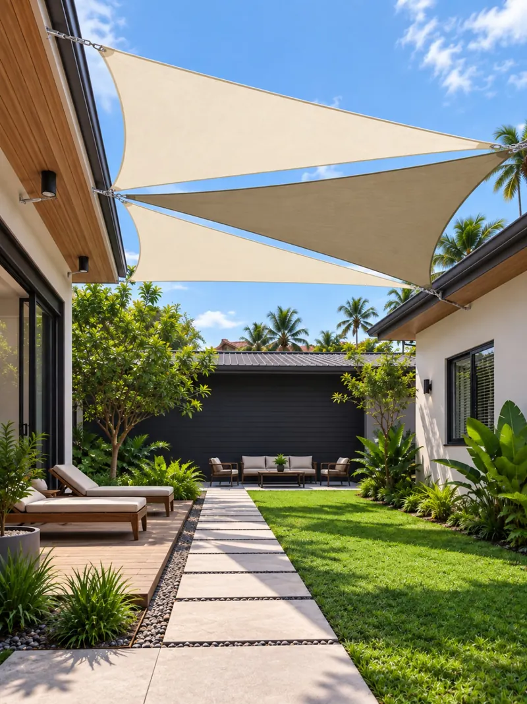
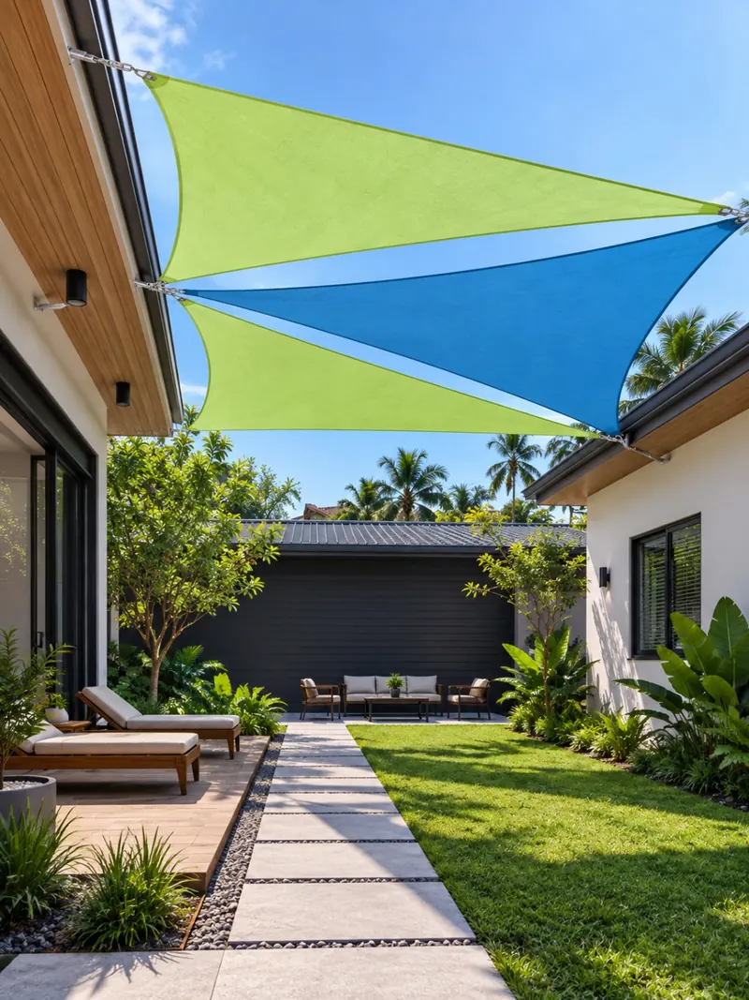
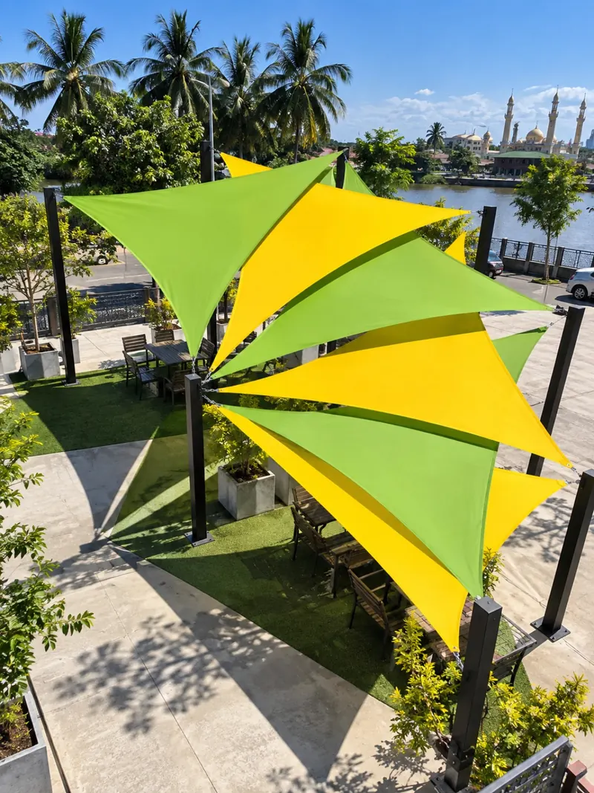
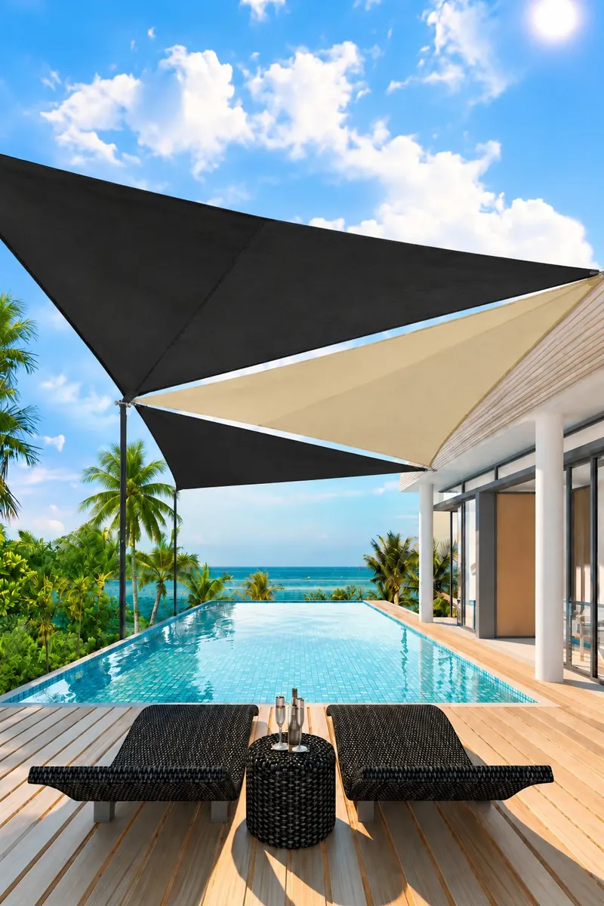
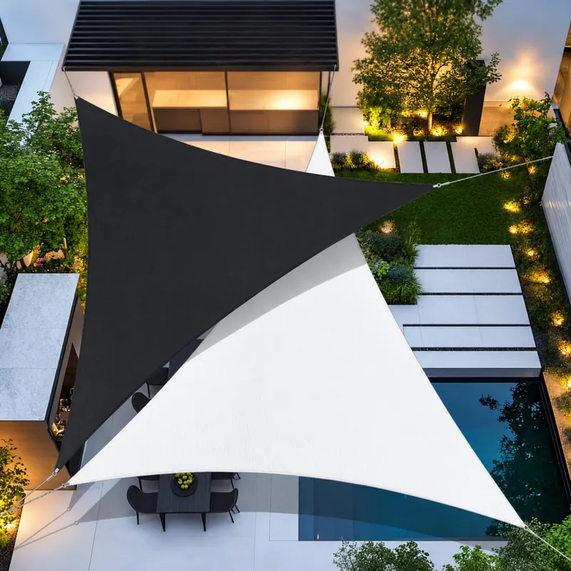
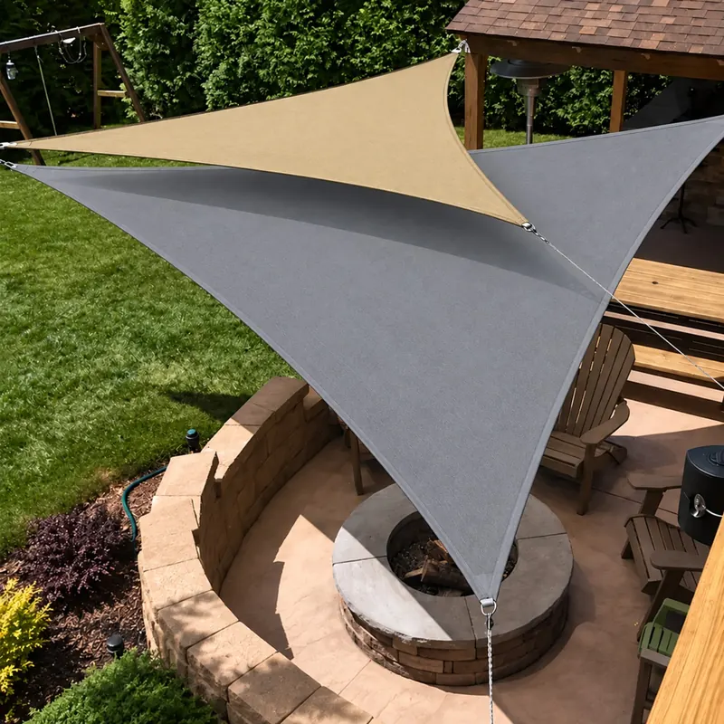

Ruang lebih selesa
Tambah kawasan teduh untuk duduk, berehat atau melayani pelanggan di luar.
Ubah laman rumah, kafe atau premis menjadi ruang luar yang selesa dan menarik. Sunshade sail direka ikut tapak, bermula RM1,998 siap pasang.
Sunshade sail memberi teduhan dengan rupa yang kemas. Pilih fabrik, warna dan susunan yang sesuai dengan ruang serta identiti premis anda.
Tambah kawasan teduh untuk duduk, berehat atau melayani pelanggan di luar.
Pilihan bentuk segi tiga atau segi empat dan warna yang boleh disesuaikan.
Kami ukur tapak, semak titik sauh dan beri cadangan visual sebelum pemasangan.
Harga asas Essential RM1,998 siap pasang. Jika dinding tidak cukup untuk mengikat semua bucu sail, tambah tiang mengikut keperluan tapak.
2 layer sail kalis air dengan 2 tone warna, diikat pada dinding atau struktur sedia ada.
Tiang besi 8 kaki berasas konkrit untuk bucu sail yang tiada dinding.
Untuk reka bentuk khas, lebih daripada 2 layer sail atau kawasan yang luas. WhatsApp 018-288 9932.
Setiap bucu sail perlu diikat pada dinding, tiang sedia ada atau tiang baharu. Pilih keadaan yang paling hampir dengan ruang anda.
Siap pasang. Bilangan tiang dan jarak disahkan semasa lawatan tapak percuma.
Tempah melalui WhatsApp ↗Perlukan design khas, lebih daripada 2 layer atau kawasan yang luas? Hubungi kami di 018-288 9932 untuk sebut harga.
* Harga bermula untuk sail sehingga 5m x 7m setiap layer di kawasan Kelantan. Tiang standard setinggi 8 kaki dari tanah; tiang lebih tinggi, sail lebih besar, design khas, lebih daripada 2 layer atau kawasan luas ikut sebut harga. Pengangkutan percuma dalam 30 km dari Kota Bharu; 31–60 km +RM200, 61–100 km +RM400, lebih 100 km ikut sebut harga. Tapak lebih 30 km ditinjau dahulu melalui gambar atau video call WhatsApp. Jumlah tiang dan jarak disahkan semasa lawatan tapak percuma.
Warna sail boleh dipadankan dengan karakter rumah atau jenama premis. Imej berikut ialah visual konsep daripada proposal, bukan foto pemasangan pelanggan.






Kongsi lokasi, anggaran saiz dan kegunaan ruang.
Kami ukur kawasan dan semak pilihan titik sauh.
Pilih fabrik dan warna, kemudian semak visual serta sebut harga.
Sahkan tempahan dan tarikh; pasukan memasang serta menyemak hasil kerja.
Untuk sebut harga, sediakan lokasi, gambar ruang dan anggaran ukuran. Borhan Sidqy, pengasas DynoShade, akan semak cadangan yang sesuai.
Lawatan tapak dan sebut harga percuma. WhatsApp 018-288 9932 untuk mulakan perbincangan.